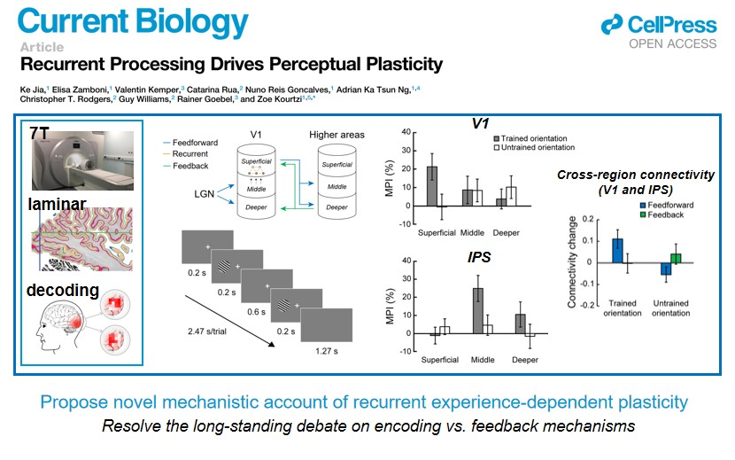

|
Recurrent inhibition refines mental templates to optimize perceptual decisions 
The idea that the brain solves complex tasks by forming mental templates—that is, internal representations of key information relevant for behavior—has attracted the attention of psychologists and neuroscientist since William James. Training has been suggested to support the brain’s ability to refine these templates and optimize perceptual decisions. Yet, exactly how the brain achieves this remains debated; we still lack a comprehensive account of the experience dependent plasticity mechanisms that support adaptive decision making. Here, we propose recurrent inhibition: an integrative brain plasticity mechanism for improving perceptual decisions. We capitalize on state-of-the-art ultra-high-field (7T) MRI to introduce a multimodal brain imaging approach, combining fMRI at submillimeter resolution with magnetic resonance spectroscopy to investigate interactions between functional and neurochemical plasticity mechanisms. Our results demonstrate that training on a challenging visual discrimination task alters GABAergic inhibition in visual cortex and enhances the discriminability of feature (i.e., orientation) representations in superficial V1 layers. Importantly, learning-dependent changes in GABAergic inhibition drive plasticity in superficial—rather than middle or deeper—layers in visual cortex, that are linked to recurrent—rather than input—processing. Our findings provide a mechanistic account of how GABAergic and functional plasticity mechanisms interact in the human brain at unprecedent resolution, bridging the gap in understanding animal and human brain inhibitory circuits that support adaptive behavior. Recurrent processing drives perceptual plasticity How does experience change sensory processing to guide decision-making and actions? There is accumulating evidence that experience changes not only the developing but also the adult brain. Understanding how these experience-dependent changes are implemented in the adult brain has seen a vigorous debate between differing accounts claiming that learning involves changes in sensory encoding vs. top-down feedback. This debate remains unresolved as the limited resolution of standard fMRI means that we have not been able to distinguish learning-dependent changes in encoding vs. feedback signals. Here we use ultra high-field (UHF) fMRI to interrogate brain activity at different cortical depths that are known to relate to dissociable brain computations. We combine laminar fMRI with a classic perceptual learning paradigm (training on orientation discrimination) to resolve the neural changes that accompany behavioural performance. Unexpectedly, we show that neither of the dominant accounts of sensory plasticity (i.e. encoding vs. feedback) explains learning-dependent changes in functional brain activity. Rather, we demonstrate the key role of recurrent processing in experience-dependent plasticity. First, we show that learning alters read-out signals in superficial V1 layers rather than stimulus encoding in middle layers. Next, using informational layer-to-layer connectivity analysis, we show that learning enhances feedforward rather than feedback connectivity in occipito-parietal circuits, providing evidence that recurrent sensory plasticity informs perceptual decisions. This provides the first insights into the fine-scale human brain circuits that re-weight input signals using recurrency in the visual cortex. We show that this information is then read-out by decision-related areas to inform improved perceptual decisions. Our approach and findings provide a significant advance in understanding neural plasticity in the adult human brain in the following key respects. First, we provide a novel mechanistic account of recurrent experience-dependent plasticity by contrast to the long-standing debate on encoding vs. feedback mechanisms. Second, extending beyond local sensory circuits, we interrogate finer-scale (layer-to-layer) connectivity between visual and parietal cortex, providing evidence that sensory plasticity gates perceptual decision making. Perceptual learning beyond perception: mnemonic representation in primary visual cortex and intraparietal sulcus The ability to discriminate between similar visual features relies on a chain of neural operations associated with perception, memory and decision-making. There has been accumulating progresses regarding experience-dependent plasticity in perception or decision-making, yet how perceptual experience moulds another key function related to temporary maintenance of information, or the working memory (WM), remains less explored. To fill this gap, we combined fMRI and TMS on human subjects to examine learning-related changes in cortical areas that are known to represent WM. Using classic perceptual learning paradigm (i.e., orientation discrimination task), we show that learning yields distinct profiles of WM representation in early visual cortex (V1) and intraparietal sulcus (IPS). In particular, we show that V1 represents WM content before, but not after, training, in contrast to IPS that represents WM content after, but not before, training. Further, we show that neurodisruption of V1 during WM delay leads to behavior deficits both before and after training, whereas neurodisruption of IPS selectively impairs behavior only after training. Our findings advance the understanding of neural plasticity in the adult human brain in following key aspects: First, we provide novel findings that learning-dependent improvement of discriminability accompanies altered WM representation at different cortical levels by contrast to the long-standing debate on mechanistic account of sensory vs. decision-making. Second, in addition to supporting the sensory recruitment theory of WM, we provide further indication that learning likely moulds the coding format, without affecting the involvement of early visual cortex in WM. |